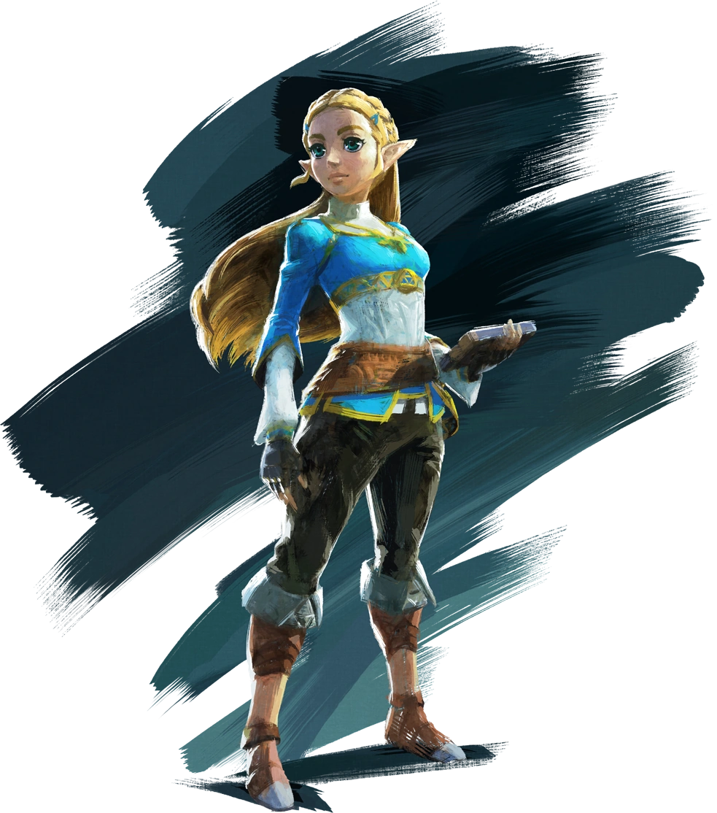
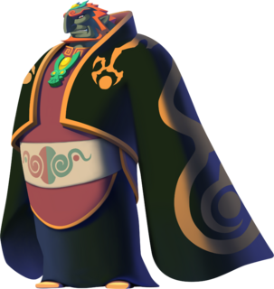

La trama se basa en gran medida en la historia que figura en el corto prólogo y el manual de instrucciones.
Hyrule se vio envuelto en el caos después de que un ejército dirigido por Ganon, el Príncipe de las
Tinieblas, invadiera el reino y se consiguiera la Trifuerza del Poder, un mágico artefacto que otorgaba una
gran fuerza. La princesa Zelda dividió un artefacto semejante, la Trifuerza de la Sabiduría, en ocho
fragmentos, ocultándolos en las mazmorras secretas en todo el país para evitar que cayeran en manos de
Ganon. Ella mandó a su niñera de confianza, Impa, a un viaje para encontrar un hombre lo
suficientemente valiente como para destruir a Ganon. Al oír esto, Ganon se enfadó, encarcelado a la
princesa, y envió a sus esbirros en busca de Impa. Según el manual, Impa huyó para salvar su vida, pero
fue alcanzada por sus perseguidores. Cuando los secuaces de Ganon la rodearon, un joven apareció
derrotando a los monstruos. El nombre del joven era Link, e Impa le contó la difícil situación de Hyrule.
Link
decidió ayudar, y para salvar a Zelda, debería luchar contra Ganon, antes reuniendo los fragmentos
esparcidos de la
Trifuerza de la Sabiduría. Link se dirigió a Hyrule, hacia una aventura épica.
Durante el transcurso del juego, Link localiza las ocho mazmorras y recupera los fragmentos de la Trifuerza
de la Sabiduría de las garras de poderosos monstruos. A lo largo del camino, obtiene una gran variedad
de objetos útiles y mejoras que le ayudan en su búsqueda. Con la Trifuerza de la Sabiduría, Link es capaz de
infiltrarse en la fortaleza de Ganon en la Montaña de la Muerte. Él se enfrenta al Príncipe de las
Tinieblas, destruyéndolo con una Flecha de Plata en las profundidades de su propia guarida. Link recoge la
Trifuerza del Poder de las cenizas de Ganon y da ambos fragmentos de la Trifuerza a la princesa Zelda, quien
es liberada de su cautiverio. De acuerdo a las palabras de Zelda, la paz regresaría a Hyrule. Un "símbolo de
valentía, poder y sabiduría", Link fue diseñado por Shigeru Miyamoto como un joven por encima de la mayoría
de edad para que
los jugadores se identificaran con él; el protagonista silencioso comienza el juego como un chico normal,
pero crece en fuerza y fortaleza para triunfar sobre el. El nombre de la princesa fue inspirado por Zelda
Fitzgerald. Miyamoto explicó: "Zelda era el nombre de la esposa del famoso novelista F. Scott Fitzgerald.Era
una mujer famosa y bella, y me gustó el sonido de su nombre. Así que me tomé la libertad de usar su nombre
para el primer título de Zelda".
El inicio de La aventura
En el vasto reino de Hyrule, una antigua leyenda cuenta sobre un poder inigualable: la Trifierza. Solo un
héroe valiente puede salvar el reino de la oscuridad, enfrentandose a emibles enemigos y resolviendo
complejos enigmas.
Personajes Claves
Link: El héroe silencioso de Hyrule, elegido por el destino para proteger el reino y la
princesa Zelda.

Zelda: La princesa sabia y guardiana de la Trifuerza de la Sabiduría, siempre al lado de
Link en su lucha contra el mal.

Ganondorf: El rey del mal, quien busca apoderarse de la Trifuerza para dominar el mundo.
